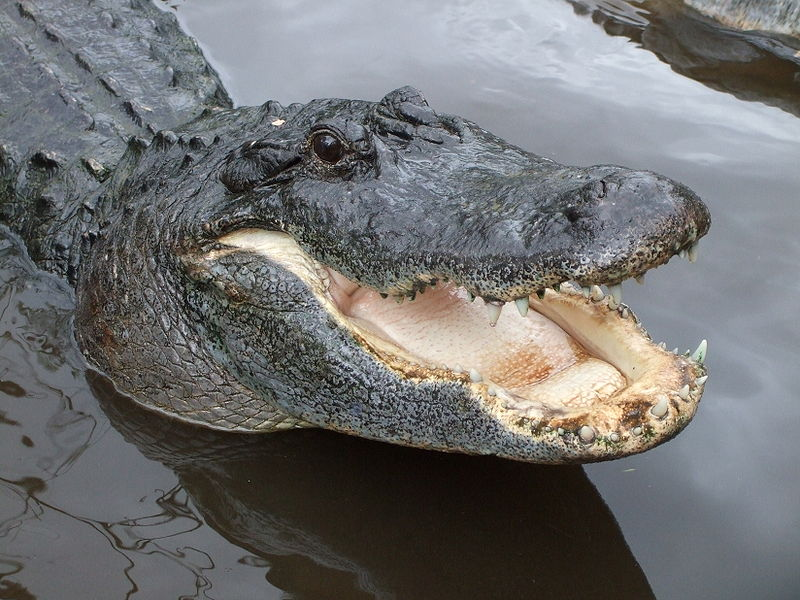

Principais características
Os jacarés são animais pertencentes à ordem dos crocodilianos.
São muito parecidos com os crocodilos, mas distinguem-se pelas seguintes caracteristicas:
- Cabeça mais curta e larga
- Têm membranas interdigitais nos polegares das patas traseiras
- Os dentes caninos não saiem para fora quando têm a boca fechada
O tamanho dos jacarés varia entre 1,2 metros e pode ir até 5,5 metros, podendo pesar entre 6 a 600 kg.
A sua alimentação consiste tanto de carne como de peixe.
A maior parte das espécies de jacarés encontra-se, atualmente, em baixo risco de extinção
de acordo com a IUCN Red List, no entanto,
o jacaré-da-china é uma das espécies de crocodilianos mais ameaçadas atualmente, encontrando-se em estado de criticamente em perigo.
Distribuição geográfica
Os jacarés concentram-se maioritariamente no continente das Américas, especialmente na América do Sul,
mas também se pode encontrar uma espécie de jacarés na província de Anhui, situada na China.
Localização de algumas espécies de jacarés
| Espécie |
Localização |
|

Jacaré Americano
|
 Estados Unidos
Estados Unidos
|
 Jacaré Chinês
Jacaré Chinês
|
China
|
|
Jacaré Pantanal
|
Norte da Bolívia e Oeste do Brasil
|
|
Jacaré Anão
|
Amazonas
|
|
Jacaré Açu
|
Amazonas
|